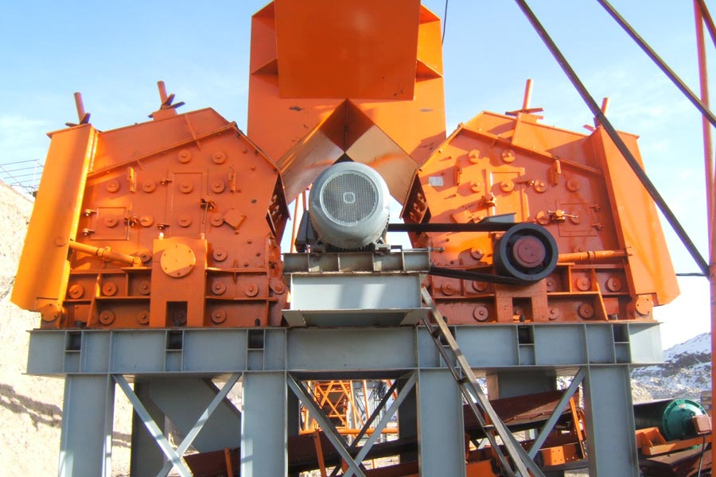

Construction waste crushing production line

Mobile construction waste crushing station for urban construction waste crushing.
vertical shaft impact crusher
Stone production line equipment impact crusher price is much
Quality of the finished material of stone production line is an important measure of stone production line, and our daily lives in many manufacturing situations, highway construction, railway construction, construction of infrastructure in many countries, both need to use fine gravel finished material , CAG as a professional stone production line design manufacturers, we continue to improve the quality of the finished material of stone production line equipment.

With the rapid economic development, China's demand for sand and gravel is constantly increasing, which promoted the rapid development of stone crusher impact crusher, impact crusher in many cities has been successfully promotion use, but to buy a large impact crusher exactly how much money, this has become a problem of concern to the majority of customers.
CAG launched a large-scale impact crusher is the use of advanced technology development, and manufacturing of the equipment stable performance and strong crushing capacity has brought significant role in promoting the city's economic development, impact crusher also According to customer demand, tailored for customers, build customer satisfaction brand, successfully promoted the rapid development of urban economy, CAG major impact crusher effective implementation of the sand and gravel crushing, bringing the city's economic development great economic benefits.
Leave Me A Message, Now
If you have any questions regarding equipment prices, production line configuration or other problems, you can send a message to us, we will contact you soon.